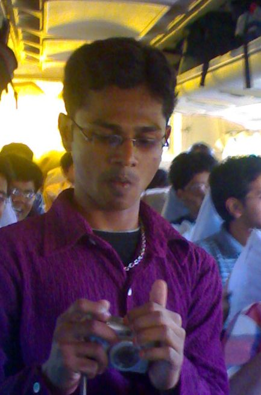
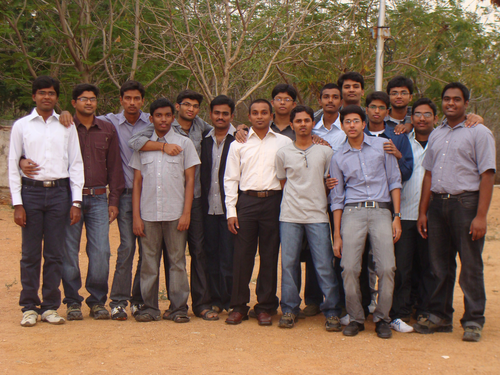
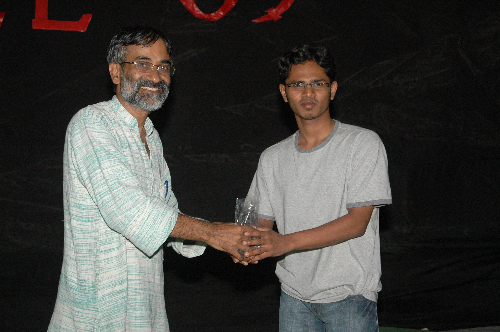

The Yearbook - Commemorating 2005-09!
Samuel John's profile information
Name - Samuel JohnBirthday - August 18
Email - samueljohnksj@gmail.com
Address - s/o John K , 39th division ,Eluru , WG dist, AP -534005
Phone - 9290655669
Webpage - Link
Hobbies - exatracting fun out of any context , reading articles from net , photography , drums [Rhythm Pads , Congo , Bonga]
WishList - set up a music recording studio , leave this clg with 6.5 cgpa :)
Memorabilia - kicking and spanking a** for all bdays and finally leg injury, endless chatter targeting everyone finally....
What would you want to be remembered as - sam , samuels , samjohn
Future Plans - if possible will do mba , soon after exiting from clg --- will catch wat i missed here
Testimonials written to Samuel John
Samuel John's Album

{kind=link}
Set

{kind=link}
4 dudes missing

{kind=link}
BTech--Farewell
Testimonials
For harshitajust for fun quote -- dats it , but sometimes OA chestaav

For harshita
the only girl in our ug2k5 batch with multiple talents , 2 much friendly , konchem OA like evryone else

All the very best in life
-----------
For Manish Sharma
batch t-shirt responsiblity , yr buk maintainance and for the things he has done for the batch which i donno and for all these


nenu veedi room ki vellinappudu nenu english use chesthey veedu telugu use chesaadu matladataniki, too much raa nuvvu
All the very best in life
-------
For Deepti
full talent + great responsible citizen
All the very best in life
For Siddardha Maddula
birthday nite endhuku yedchaav raa , sry raa edpinchinandhuku


For Aditya Agrawal
dude wat to say , thanx for the advice u hav given me at the start of the placement season and for all wat u have shown during placements
, ur farewell speech was emotional and it reflected your strength and ur will in working for the batch
for u
best wishes
-------
For Sanket Sharma
in Jan 09 ,he suddenly came to my room , i was watching some english movie [early in the morning around 9:30 ]..... he started taking class for me as I was not taking placements seriously.. i said to myself "this eerip**k
came at the right moment to teach me ,and i thought shud I not take chances to watch movies if placements are going on" and so on ... feelings ....and in the process he explained the efforts they are putting in to get the companies and how important it is to get placed soon and assured that sufficient number of companies coming and that I shud take it seriously . Thanx for the lesson and my , i dude u just gave me hope
coming to other things ppl love him very much and especially we[some guyz in our ground floor batch] say things like errip**ka ... as he loves them and knew their meaning and in return he also says similar words and thats lotta fun and
, to ur honest freindship
best wishes
--------
For Rajesh kumar kothuri
baaboyy veedu chaala soft , eppudu oka smile tho pleasant gaa vuntaadu
-------
For Srujan Kumar
ammayilani goram gaa line lo pedthaadani clg mottam pyna kindha kottukuntunnaay, inka nenem cheppedhi
mottaniki chaala manchi vaadu , keka talent
, ekkuva raayatledhu nuvvu vaddannavani , pandaga chesko
--------
For Varun Jampani
police luks , rough luks but veedini kukkaata adukovachu -- veella batch adhey chesthundhi[neneppudu aadukoledhu veedini endhukanteyy pedda kasi naa koduku
, cameo role laa takkuva kanipistaadu ] , nee kasi ki talent ki
best wishes raa
--------
For Vinay Reddy
veeditho aadukotam chaala danger , peddha pyscho naa koduku
 ... appudappudu chaala moody gaa untadu wish cheyyataaniki kooda chance ivvadu , oka luk kooda veyyakunda velpothaadu , veedilo ee angle naaku artham kaaledhu
... appudappudu chaala moody gaa untadu wish cheyyataaniki kooda chance ivvadu , oka luk kooda veyyakunda velpothaadu , veedilo ee angle naaku artham kaaledhu 
2 much comedy chestaadu , andarni koduthuntaadu ,kaani chaala soft heart veedidhi , baaga help chestaadu
touch lo undu gilly
---------
For valiveti venkata srikanth
2 much candet veedu pyki alla kanapadadu , veedi yedaina topic chadivi tute teeskunteyy artham kaani vaadantu undadu
ATM for many and a guy with gud heart and innocence
and helping nature, nee range ki match ayye job kottesaav pegasys lo
jokulu veyyatam lo chaala weak
total life lo ilaa pandaga chesthuneyy vundu
, gr8 to hav a dude like u mamaa
best wishes
------
For Prashasti Gupta
all rounder
best wishes

For Ravi Chandra
step up 2 da streets movie lo DJ gurthostaadu veedini chuda gaaney naku , rapper style walk , innocent face ....
veedi emacet rank chepthundhi veedi keka talent ni
, operating systems tho aadukuntu untaadu , intersest unna panulani 200% sharp and interest tho chestaadu
pickle maatram konchem kooda pettadu
, gaming freak ..andharu veedi room ki vachi veedini aadukuni maree chesevaallu ayina anni sportive gaa teeskunna keka dude veedu
touch lo undu mamaaa
----
For Praveen Kumar Bonthala
veedu yedho alaa alaa sem ki okasari darsanam isthuntaadu
, animes chuustu , games aaduthu , vaadilo vaade navvukuney cinemalu chuusthu time pass chesthuntaadu , kanapadina prathi saari veedilo naaku kanipinchey difference-- inka fat gaa avvatam
veedi talent abbo pitchi keka
, naa ITWS proj partner , 4 yrs lo anhdaru nerchukunna danni veedu okka sem lo finish cheyyagala talent , sarigga utilise chesko raaa
best wishes
-----
For Vijay Bharath Reddy Yaram
manodu comedy create chesi , cheyyatam lo "brahmanandam" range
, appudappudu veedu vesindhi counter/joke kakapoyinaa veedi navvu chuusthey yevvadikainaa navvostadhi , too much smile babai dhi
manchi football player , veedu eppudaina ayyadanteyy[adhey item avvatam ] ventaney silent aypothaadu
[veedi meedha focus unda koodadhani]
public ni adukotaaniki ,navvinchataaniki blog raayatam lo veedi dedication ki
, almost evvari blog regular gaa chadavaka poyinna veedi blog lo updates regular gaa chuustaa , too much , 2 or 3 or more number of items ni center chesi posts raasi vaallani popular cheyyatam [item cheyyatam ex: isaa character ....]
ilaa jokulu counters tho aaduthu ,navvuthu navvisthu MS twaraga cheseyy
touch lo undu
------
For Srinivasa Rao Sunkara
dude chaala silent gaa vuntaadu , keka talented
, perfect guy type
best wishes
-------
For Karan
"chand is naughty "
"chand loves america " really i was
, [pitchekkinchaav mama ee dialogue ayithey ]
the below testimonials speak a lot abt him ....
i only hav this
for u
best wishes
------
For Raghavendar Reddy
antha gaa telidhu veedi gurinchi but okkati maatram chepthaa --- nee non-stop non sense jokes/tries and the amount of effort he puts in that tries must be
, alage inka manchi friend ani telsu
best wishes raa
---------
For Sahiti Polishetty
imey ki award vachindhi ani news paper valla whole andhraa mottam telsindhi
,so obvious gaa intiki vellinappudu adigaaru
" ammayi telsaa ani ?"
yea telsu ,maa class a thanu ani cheppi [ayina , aa award adhi gals ki ani anna mother tho .... sarle boys ki alantidhi vunna nuvvem peekalev le ani almost anesaaru
 -- counter padindhi naaku ] , so indirect gaa yedavalni chesindhi -- gr8 talent
-- counter padindhi naaku ] , so indirect gaa yedavalni chesindhi -- gr8 talent
best wishes
--------
For Asrar
this dude used to discuss academics in my room [only 2nd yr in gheb ] with siva reddy , i was really amazed at his dedication and hardwork in studies
best wishes for ur future plans
--------
For Hareen Gopisetty
ee abbai chaala "ammayikudu" aa vishayam naaku assalu artham kaadhu
, firt yr lo lab lo andharu kalisi devotional stuff chuusthunteyy veedu "oreyy nenu control cheyyalekapothunnaraa daanini ani sacheyy vaadu[konchem modify chesaa lekapothey mari galeez gaa untadhi ]"
baaga innocent and he moves in his own world
best wishes raa
------
For Hari krishna
iddaram 3rd year lo lab lo PC kosam reason lekundaa iddaram argue cheskoni serious aypoyaam
 ..... tarvaata assalu maatladukoledhu ,later 4th yr lo varaga gaadi room chinna sitting vesinappudu mallaa kalisipoyaaam
..... tarvaata assalu maatladukoledhu ,later 4th yr lo varaga gaadi room chinna sitting vesinappudu mallaa kalisipoyaaam
manodu gym lo chaala kashtapadevaadu
, inka porlani kooda patayisthuntadani vinnaa
as usual lyf ni manchigaa njoy cheyy raa
-------------
For Kiran Neelisetty
veedu cricket baaney(baaga) aduthaadu ,fone lo , chatting lo ekkuva batting chestuntaadu
inkemundhi mama as usual MS cool gaa nee ishtam vachinappudu cheseyy
--------
For Srikanth vimjam
off-side wrist tho veedu kottey sixers awesome raa
his tummy is getting bigger day-by-day , do something raa , inka manodu chaala soft , ekkuva den*ithey vachi vachi pedda pedda shots istaadu item saale gaadu
, veedu sollu cheptadani andharu baaga sollesaaru so inka nenu sollanu daani vishayam , veedu clg lo kanteyy intlo ekkuva rojulu untaadu
veella batch lo veediney ekkuva target chesthunttaru ayina mana vaadu lite teekuntaadu endhukantey ekkuva chesthey inkaa ekkuva veediney den*uthaaru reverse lo ...so nee talent ki
gr8 to have a dude lyk u
best wishes raa
-------
For shashank lagishetty
veediki ee madhya talent baaga perigindhi , chaala soft gaa untaadu pilla naayala
social responsibility baaga ekkuva
veedi bday ki baaga den*ithey veedini , veedu and raju gaadu pillaa candets la 2much fight cheskunnaru
nuvvu change avvaku babai , fun being with u , as usual MS twaraga cheseyy
----
For S.Rama Krishna Raju
naaku DC lo A vachindanteyy veedi vallane , too much patience veediki , chinna chinna doubts adigi comedy create cheyyataaniki chances istaadu , assalu 2nd yr lo DC course chesthu venkayyani pitchi pitchi gaa impress chesaadu
DC ta recommendation kooda veedu ichindhey , pani mottam anna schedule vesi chuuskune vaadu , kasi baaga perigindhi anni areas lo veediki
, a vishyam lo ayina help cheyyataaniki ready gaa untaadu , item comedy chestuntaadu
MS twaraga cheseyy
--------
For P Sharat Chandra
arey telugu artham ayyiddi gaa
milk boy -- veedu and srirang gaadu assalu 2 much untaaru , veediki oka pori ni patti propose cheyyalsina pani ledhu -- vaallu veediki propose cheyyaali --adhi rule antheyy , chestaaru
2much kasi na ko , andharu nee talent 2 much ani yelano raasthaaru so nenu neeku
----------
For Ravulapalli Srikar
idhi raa nee testi previous dhi lite
veedu sudden gaa counter attack start chestaadu , jokes and tries abbo pitchi keka
, parledhu kanapinchadu kaani pitcha kasi na KO gaadu ,inka careful gaa public problems vintaadu-- help chestaadu , power star "pavan" gang mana vaadihi , ee madhya kadupu tagiiyyalani baaga kashta paduthunnaadu , 4 yrs perigindhi daani taggiyyalanteyy mari rojuki 16hrs kashtapadaali , so entha taggisthey antha manchindhi company lo porlani padeyyataaniki
....untaa mari
---------
For Namrata Suri
my only interaction with her was during BTP vivas that too few words , she always has a gud smile on her face
and friendly with evry1
best wishes
-------
For Prateek G V
the "perfect decent guy " ,gud friend and helps ppl a lot in all issues
humor content in his blog posts is at peak levels [gr8er than all the guyz in our batch ]
best wishes raa
For Ravulapalli Srikar
LOL raa ,faaak , adhi neeku kaadhu bey , delete cheyyistaa
For Ravulapalli Srikar
the "perfect decent guy "
,gud friend and helps ppl a lot in all issues
humor content in his blog posts is at peak levels
[gr8er than all the guyz in our batch ]
best wishes raa
----
For Kranthi Reddy. B
scp gaadentraa antha raasaadu , oka beer drink cheseyy time pattudhi adhi chadavataaniki
For Vamshi Velagapuri
veedi comedy 90% too much gaa untadhi
sometimes aa 10% smell vastadhi ayinaa navvostadhi , veedi baavalu sayya song 1st yr lo arupulu ...nee laaga decent comedy cheyyalani naa korika
talent and hardwork and fighting spirit ki
final gaa neeku
--------
For Sunil Soni
abbboo veedi talent kasi anni kalipithey inka tsunami ne
, too much friendly veedu entha aadukunna emanadu item gaadu , volley ball lo kekalu puttistaadu , inka veedi gurinchi bhanu gaadu define chesaadu kindha ..so dats it , nee talent ki tagina company ki shift ayipo qucik gaa
-------
For Nihar K
mamaa chaala cool , moovies, animes baaga chuusthaadu , veedu eppudu cricket adataaniki raaledhu
, veedini dobbataniki naaku a topics dorakatledhu , lovely friend veedu
--------
For Raja sekhar reddy A
mama praveen and raj story rayali raaa
, veediki kooda chaala unnaaay For Navatha Tatineni
ee ammayi chaala busy busy gaa untadhi eppudu yedhoka projects or course TA ships or.....inka yenno yenno like cultural activities going on in colez vaatannitiki naa
1st yr lo imey and namrata SCP gaadini thega tittukune vaallu [yedava, PC ivvadu saavadu ani.....
too much asaalu ]
music course lo telsindhi imey sincerity and hardwork
best wishes for ur future plans
[emaina huritng gaa unteyy manninchaali]
----------
For Navatha Tatineni
photo lo side ki dustbin undhi daanni crop chesthey , foto mnchiga untadhi
For Narendra
jungle boy [tarzan video] aaa range talent , variety wishes chesthuntaadu veedu
veedi range ki okkati sarigga isthey evadaina sare chachi povaalsindhey, 1st yr loney konni racha racha chesi pettaadu , inka volley ball lo kekaa , trees virakkoduthuntaadu , godalu pagal denguthuntaadu , anime fantasy ........... too much raa nuvvu
-------
For Nagarjuna Pavan Kumar G
debater , oka keka talent , fire brand ayina veedi arguments lo reason untadhi , analysis untadhi , ece vaallalo cheppindhi chesi chupinchevaadu veedokkade[batch kosam work cheyytam , problems notice chesi report cheyyatam]
yenni ela vunna too much helping gud friend
touch lo undu
------
For N Anantha Krishna Karthik
sometimes when we meet in mess --wrestling topics discussion , inka manodu gym boy , decent , cool and calm ... anni gud qualities , alaa yela vuntaaru mama
------
For Md Abdul Azeem
mama, nee common word 2 much raa [laffada naa p**ku gaallu ]
, inka veedu pakkaa lazy candidate , funny guy ....manam manam same company inka arupulu pettiddaam For Maruthi Manohar
maaru, mana vaadi smile chaala warm and sweet ga untadhi , counters vesthunna feeling lo undi janalni saava denguthuntaadu
talented fellow and kasi candidate anukuntaa [antha idea ledhu], inka sonus lo satti gaadu nuvvu pandaga cheskondi[vaadi lazynes ki nuvvu sasthaav chuudu]
touch lo undu
------
For Mahesh Raja
veediki prathi vishayam lo baaga kasi ekkuva
, happy gaa wish chestaadu kanipinchina andarini
best wishes
---------
For M.Bhanu Chandra
maama gym boy , too much maintain chesthuntaadu , veedilo chaala itemness undhi games adetappudu ..comedy fellow
, inka em cheppaali manodu 2 much candidate , talented
best wishes
-------
For Lydia Manikonda
shared same pc in workspace , sincere hard working girl [mari antha sincerity aithey em analem juss
compilers course ki girls TAs gaa unnappudu course chesthunna mana vaallu[boys] edho assign cheyyanandhuku class pikindhanta , allaa aithey OA laa untadhi
1st sem lo class lo notes teeskunedhi , alaa oka 5-6 times adakkunda teeskundhi[konchem irritation vachedi intha ......]
, later notes teeskovatam manesindhi[empty notes lo emuntadhi]
1st sem lo 2nd assign ki submission last day lab ki vellithey inthalo imey vachi nenu assign inka start cheyyaledhu ani sad[cry] face pedithey ..inka appatninchi imey lab lo kanapadithey nenu aa PC vacate chesvaadini[atleast veellanna useful gaa use chesukuntaaru ani ]
2-1 lo ITWS proj ki partner ayithey nenu swap cheskunna vere vaaditho , endhukanteyy yelago nenu work cheyyanu, inka naa valla girls grades pothey chaala item gaa untadani [malla girls tho tittinchukovatam istam leka, ee yedava work cheyyadu ani ] anthey tappithey vere reasons em kaadhu , sry for that feel ayyi unteyy
finally
for ur sincerity and honesty
best wishes for ur MS
neways 2 yrs seating arrangement valla sweet memories
[emaina huritng gaa unteyy manninchaali]
For Kulbir Saini
shared same PC in workspace, he used to be always on that PC , so I rarely got any chance but he made good use of it unlike me , happy for u dude
njoyyed reading your posts in ur blog and ur peculiar encounters with professors used to wake me up in the classes
, u were the only one to be my partner in exams in returning the empty answer sheets [in some boring subjects ]
he has got talent mixed with fun
best wishes
-------
For Kiran matam
anni exams lo one of the sources for me[chance unteyy , prati exam lo veedu naa front ayyi unteyy naa CG veedi kanteyy ekkuva undedhi , but rarely got those chances bcoz....] , veedu serious avvatam almost okkasaari kooda chudaledhu nenu , GG raa
For Harish Garapati
inka chinna pillodu veedu , gud boy , neatness baaga maintain chestaadu , ekkuva aadukunteyy tittestaadu
, intiki vellalantey 2 days mundhu reservation cheyyinchukuni veltaadu ippatiki, pakka planning ... manchi talent veedidhi
nee smile keka untadhi raa , nuvvu ala smile isthey neekey tension undadhu
touch lo undu mama
---------
For Gopala Krishna Koduri
veediki nenu yenno saarlu keliki mari kopam teppichaa but chaala control cheskune vaadu , manchi manishi manasunna manishi
, geek veedu , ekkuva girls albums loney comments koduthuntaadu , alaa vaallaki kotti kotti atuvanti item tries maa albums lo try chestey guddhalo...... but vaatini inka item chesi comedy cheyyochu , cycle koni oka trend start chesaadu gopi gaadu , inka veedu eppudaina maatho cricket aadutaada ani expect chesaa kaani ledhu , arey okkasaaraia aadali bey nuvvu lekapothey adhi baddhalespoyyiddi
MS mari thondaraga chesi , phd kooda cheseyy , inkoti undhi adhi nenu cheppanakkarledhu
-----
For Arun M.S.C
telugu baasha lo veediki nachey okey okka padham "cunt"
For Chandrashekar V
anna janalni counters tho aadukogaladu , inka manodiki em rayali antey pitcha kasi na KO gaadani vinnaa , mtech pori okathi undedhi adhanteyy manodiki pitcha pitcha gaa
,guddha baddhakam ekkuvanukuntaa
edhi emaina nuvvu kummuthaav
------]
For Chakrapani
gr8 runner , veedu bakkaga untaadu em run chestaadu le anukunna kaani nee running ki
, veedilo remaining characters naaku idea ledhu but veedi jokes/tries maatram worst gaa untayy (tappadhu mama cheppesaaa )For Purushotham
ee abbai chaala manchodila kanipistadu and nijam gaa manchi vaadu
chaala mandhi item saale gaallu veedi meedha item tries chesthunteyy ,vaallani pitcha lite teeskuni cool gaa untaadu[aa items ki assalu comedy sense undadhu
]
music course veedu cool gaa untadanteyy teeskunna , item ayyaa [credit goes to playboy
, ] , girsh gaadu veedini gtalk lo voice chat pettukuni [gheb to obh] torture pettevaadu vaadi tikka questions annintiki veedu answers chepthuey undevaadu neeku , patience ekkuva , talented guy
best wishes
---------
For Bhanukiran Vinzamuri
anna gaaru baaga sensitive , first yr lo IIT IIT ani thega kottukunevaadu discussion forum lo , veedu lekapothey memu maatladaleka chachey vaallam
felicity rock nite roju em jarigindho naaku telidhu , veedey vachi naaku mallaa cheppadu , nuvvu antha sportive entraa baabu
, mama ninnu target cheyyanu bey next time
a gym ki regular gaa vellatam lo dedication or dualities kosam ee madhya thega kashtapadindu neeku naa
nee MS , ee clg ni rape chesi teesko
PS : Batch trip ki lets go to hell , akkada racha lepudaam
For G. Rohit Bharadwaj
konchem kopam ekkuva kurradiki[mostly in cricket] , enthakaina kurrataanam kadha
, crucial moments lo ekkuva responsibility teeskuntaadu
mee nbh batch ni eppudu dobbaledhu raa nenu
 bdays ki , inka chance raaka povachu ...lite , inka manodu counters baaney vestaadu , aa chandu gaadiki ammayilanteyy shy feeling poyelaa cheyy raa[CA peddadhi kadha , pandaga cheskuntaadu , abboo srujan undaga kashtam le kaani ]
bdays ki , inka chance raaka povachu ...lite , inka manodu counters baaney vestaadu , aa chandu gaadiki ammayilanteyy shy feeling poyelaa cheyy raa[CA peddadhi kadha , pandaga cheskuntaadu , abboo srujan undaga kashtam le kaani ]
mari MS manchiga tondaraga cheeyy
--------
For Srirang Ranjalkar
veedini vjwada lo inter lo chuusa , ikkada clg lo same A4 section lo parichayam , abboo assalu andharu veedu fat gaa avuthunnadu ani okasaari comment chesthey Meera mam " If I had been younger I would have tried him " ani complement isthey
inka andharam mooskunnaam
later veedu DJranga ani ekkado pettukunteyy chaala chesthunnadu veedu anukunnaa .. immediate gaa felicity or yedho event jarigindhi , racha lepaadu annayya prithvi gaaditho kalisi
, veedu prithvi gaadu wing lo kalisthey chaalu inka rap songs start avuthaay , arupulu pettistaaru
inka veedu cricket lo bowling chestheyy okka over ani cheppi 3 overs vestaadu [12 wides + 6 normal balls], inka veediki bowling yelano ivvaru get the max out of this ani pandaga cheskuntaadu
papam veedu entha mandhi ki testi lu raayalo ani talachukunteyy
whole India cover cheyyali
veedu orkut album lo clg nunchi vellemundhu aah fotos petti andharni padesaadu ,girsl ki last touch ichi vadilaav raa [inka em cheskuntunnaaro
]
u can create fun around wherever u r and with the talent , u simply rock
arey neeku bumps eppudu sarigga ivvaledhu bey , okasaari vachi den*inchuko
For Raveendra M
maama too much , if he thinks of anyone to be an item guy , he does not give a damn fuck about him
, never care and live free attitude , watches wide variety of movies and puts a lot of conspiracy in his words , gud guy , gr8 guy and wise guy For Sridhar Duggi
veedu endhuku fat gaa avvaledhanteyy , adhantha veedi GB lo untundhi
, very tough guy , naaku 1st yr lab tests lo chukkalu chupinchaadu 
veedi sleep , food anni variety
, goes into arguments in no fuckin matter of time -- f u wise guy , enni yela vunna too much friend For Satyanarayana Koneru
arey mundhu photo chinna naatidhi okati pettu , idhi load avvataaniki chaala time paduthundhi
,veediki veedi size testimonial raayali ani decide ayyaa , kaani yedavalu kindha chaala raasi chachaaru
manodu batting chesthey tsunami vasthundhi (ground lo or room lo
) , frequency marri baaga ekkuva , yedava room lo eppudu cheekatlo untaadu , door knock chesthey eppudo okasaari teesthaadu , veediki cricket lo raja gaari provisions , extra fielder , runner , no practice sessions ... ivvanni veedi batting talent ki
annayya chaala takkuva dialogues vestaadu , avi chaala powerful , analysis lu baaga chestaadu , first shot(interview) lo direct head shot vesaaadu , so vaadu job ivvaalsi vachindhi
arey nuvvu antha yela balisaavu bey , summer lo veedini roju gym ki teeskuni vella ,"mike tyson" la cheddamani , aa kishore PT gaadu madhyalo vachi kelikaadu ,veedu lite teeskunnaadu
nenu batting chesetappudu ee item saale gaadu keeping chesthey nenu kottey okka shot kooda kottataaniki chance undadhu
, veedu navvithey body motham spring laa , veedu padukuni potta meedha mouse ni hover chesthunteyy
den*alanukunna vaallani direct gaa den*utaadu
naa bday ki veedu lekapovatam naa luck , lekapothey
, ippativaraku nenu bumps ichina vaallalo naaku peak satisfaction ninnu den*inappudey mama abboo satti gaadiki kooda noppi lestadhi ani anipinchindhi
neeku inkosaari bumps iyyalani naa korika , oka chance ivvu raa , pole ki ninnu nuvvey kattukuntey wicket tho den*alani vundhi , appudu nuvvu pilla naayala laa , peddha size lo arusthunteyy
video theesi , eppudaina bore kodithey adhi chusi navvukovachu , gimme one chance buddy life time memories
----------
For Siddardha Maddula
veedi itemness ki every single person can write a single book of 1000 pages, so i wont write that much
first of all veedu maa batch ki oka blessing , endhukanteyy veedu leka pothey thanninchukune vaadu , prathi okkadi bday ki common gaa bumps den*ichukunevaadu , prathi chinna vishayam lo maabuthanam chuupinchi item ayyevaadu , reason lekunda target ayyevaadu veedokkade
veedu lekapothey nannu BTP partner laaga accept cheyyataaniki naaku evvadu[anteyy total work chese candidates lo ] undey vaadu kaadhu , neeku naa
, aa project ni nenu goram gaa vaadukunna naa interview lo , thanx raa dude naa btech life gattekkinchaav
veedi talent enormous
datz the bottom line
so inka veedi KAP**kathvaniki oka example ivvakunda I cant escape so....
eluru velletappudu clg bayata ATM lo money teesaaaka naa daggira vunchutha ivvara money anteyy , OA chesaadu , 7 seater ekki lingampally lo digi konchem dooram nadichaaka money poyyindhi annaadu ...money yela pothay bey antey -- auto lo veedi pakkana koorchundhi chinna pilladu [may be 4th or 5th class], kindha padinaya anteyy ledhu migata vaallu uncles and aunties , so aa pillagaadu veedi nidra moham chuusi veedu pitcha lite ani lepinattunnadu asalu pitcha
manadhi same ooru kadha, touch lo untaam
nuvvu nee character maarchukoku, we
u raa, neeku laa undatam evvadiki possible kaadhu , konchem atleast neatness maintain cheyy
-------
For satya janga
first of all veedidhi innocent errip**katvam , chaala manchi vaadu yelagantey ""general gaa siva reddy gaadu andhari gurinchi care teeskuntaadu including girls kaani veedu siva reddy gaadi ki care teeskuntaadu ""
3-2 finish ayyaaka summer lo siva reddy gaadu ammayini parichayam chesthanani veedini roju lab ki teeskuni velli veedini item chesaadu , aa ammayi veedini thammudu andhi
-- basic gaa veediki artham kaani matter -- aa play boy gaadu vaadi image penchukodaaniki veedini teeskoni velli item chesaadu veedini
gadde gaadi meedha daridramaina comments chesi vaaditho thittinchukuntaadu
, andhari bdays celebrate cheyyatam veedi duty , cake tisuku vachi , andhariki cheppi celebrate chestaadu
puli raju [putrela puli ] ani veediki veedey title declare chesukunnaadu , tonic veyyakundane nenu tonic vesaa ani phone lo cheppukuntu maatladentha errip**ku evadanna untaada [general gaa tonic vesina vaadu nenu veyyaledhu , i am in full control ani maatladutadu but veedu
]
inka helping nature lo veedu peak daaniki naa
, ee vishayam lo veedini minchina vaadu ledu :
andhari problems veedivi laa feel ayyi solution ki try chestaadu , veedikunna patience kooda peak levels , veedoka blood bank, veetannitiki naa
, andhariki money donate chesthu untaadu
inka comedy levels kostheyy manchi comedian [anteyy veedu avvuthu untaadu ] , only samrat gaadi meedha pani chesthaay veedi jokes and counters
, janaltho appudappudu aadukogaladu [ammayi profile create chesi .....]
veedi savitha bhabhi character marchipoyaa , kuppalu kuppalu stories assalu , keka batsman , stuff update cheskuntaadu regular gaa , variety kooda try chestaadu
nee qualities unna friend dorakatam rare raa baabu nuvvu , we all are blessed to have a frend like u
so prasthutaaniki close chesthunna [testi raa
] , malla open chestaa
--------
For Satish Chandra Prasad
"naaku nuvvu neeku nenu" laa undedhi maa situation 1st yr lo
[bcoz maa mad*alo seating arrangement valla] , nidra povataniki kudiredhi kaadhu , evadanna front kostada ani adigithey okkadu kooda vachevaadu kaadhu , neways that will be a sweet memory veediki despite losing much fun [ayina veedu arupulu pettinchaadu le , nick names petti pilichukune vaaranta meeku naa ],
" veedu workspace lo pc ni almost veedi sontham laa vaadevaadu , migatha iddaru partners veedini thega tittukune vaallu
pakka kelli ,adhi maatram [ yedavaki panem ledhu ikkade chastadani " ]
1st yr lo peddha mabbu gaadilaa vundevaadu , tarvaata chaala develop ayyadu especially 3rd and 4th yrs lo assalu andhariki counters veyyalani 24 hrs think chesthu vundevaadu
, ayyevaadu baaga , pakkane undi silent gaa *background process laa dialogues vesthu untaadu , desperate attempts anni , janga gadi meedha veedi success rate chaala ekkkuva
new yr nite ki tonic thaagi nuvvu chesina comedy assalu ee 4yrs lo one of the best raa
[tank band ki vellina items miss ayyaru ee historical occasion ni ]
inka manodu bhimaaaram nunchi kaabatti inherent talent konchem chupinchevaadu , veedu cric lo konni balls ni avi stumps daatipoyi keeper ki velthunna time lo timing chesthuntaadu
inkemundhi raa neeku raayalsindhi chaala undhi prasthutaaniki neeku nee snehaaniki naaa ee
--------
For Sandeep Y V
*siva reddy -- the play boy * valla friend ayyaadu ,iddharu[sivareddy and sandeep] kalisthey inka GAY play start ayyedhi , nee ayya iddhari torture tattukoleka 2nd yr lo
......
iddahru same section(B section) avvatam valla class lo kooda chesukune vaallu
, 2nd year gheb lo veedi pakka room loki shift ayyaaka , this item used to shake that item's bed with his heavy personality and also did batting on his bed[he himself revealed this , i donno if its true  ]
]
coming to other things , midsems or ends watever exams finish avvaganey mugguram kalisi stuff chuusina rojulunnaay
2much stories narrate chesevaadu , school crush evaro ammayi stories cheppevaadu
, inka manodi talent telsindhi Microsoft , DEShaw .... CAT ...... anni kummiden*i vadilaadu
inti ki vellinappudu , thintaaniki chaala chaala teeskuni vastaadu [weight taggaalani]
inka veedi comedy style ki vasthey 1st yr lo parledhu antha try chesevaadukaadhu --plain comedy , second yr lo tries , inka 3rd yr nunchi yedho oka item counter/joke vesi nenu different levels lo unna , peak lo unna , mad*a masenam ani cover chesevaadu but tarvaatha chaala develop ayyadu counters lo or jokes lo [okasaari rajahmundry gurinchi mess lo kothalu kosaadu kurrodu .... 2 much
ilanti jokes veedu vesinavi godavari lo kuppalu kuppalu kottuku pothundevi]
annintiki minchi manchi dignified gaa untaadu ... inkevo superlatives vaadochu kaani lite ... manchi friend
idhi chaalu naaku
inkemaina unteyy malli raastha
manam ratcha cheddam ikkade hyd lo
------
------
For Amarnath
eppudanna batch motham kalisi sollu vesthunteyy veedu late gaa vachi already cover chesina topic ni latest gaa cheptunnademo anukoni malla start chestaadu ,appudu start chestaaru veedini adukovatam
, kasepu den*aaka vellipothaadu and he will be back again in minutes and the same story repeats
" veedu manishi roopam lo nadachi vacheyy konda "
anni subjects lo A grade techukuney kasi veedidhi ,TA ship ki apply cheyyochu kadhara ani adigithey " oka konda errip**ku navvu navvuthaadu " inkendhuku raa mari aa grades kindha pettukotaanikaa
[kaani veedu cryptography course tutorials cheppadam vallane naaku B grade vachindhi ,thanx ra maama , andhukey intha baaga raasthunnaa testi ]
veedu shoppings ki , classes ki, annintiki one man army laa vellipothuntaadu
, every single sentence ki ending lo oka *KAP* smile istaadu [arey nee marriage ayyaka nee wife tho kooda ilaa ichavanteyy inka ..... no comments ]
""intha aadukunna veedu malla maa daggarikey vastaadu , for ur love theesko naa
""
nee patience ki , nee KAP panulaki , nee kasi ki , nee talent ki naa
so intha laa raasanani em anukovvadhu raa , this is our last shot but i will try to write some more for u .....
vastaaa----
-----------
For Satish Varagani
mamaa rough gaa kanipisthaadu especially with beard he looks like Jr.NTR[ekkuva chesaana ,ninnu entha pogidina takkuve raa
]
maama inter nunchi naaku telsu lite gaa , chaala soft , i have never seen him hurting or speaking rude to anyone
, cool going , life ni njoy chesthu untaadu , old cinemas ekkuva chuusthaadu , inka em raayali mama neeku , nuvvu item chesina occasions kooda em levu, daaniki naa ,naa slang use cheyyataaniki naaku chance ivvaledhu nuvvu
intha manchi vaadivi enti mama
For Kishore Yadav
assalu janga gaadu veedini , "trying to become an african ani anteyy "
For Sri Harsha.B
veediki potta mundhuku and ass in the oppsoite direction lo alaa peruguthuney unnaaay , malla veediki takkuva time lo 6 pack kaavalanta , arey only batting chesthey saripodhu raa mamaa
prajaa sevaye na jeevitham laa anni panullo mundhuntaadu , den*atam lo kooda
, andhariki jobs teppiyydaaniki chaala kashtapadi work chesaadu
aah front wing lo towel kattukuni oka range lo oopukuntu atu itu rounds vesthuntaadu
, story narrations oka range neeku ivi , "BEWARSE" ani oka video lo[ug2k4 productions] lo veedi acting talents ki anni character
final gaa manavadu manchi manishi , manasunna manishi ( adhi kooda vundhi le
) ,full credit raa neeku nuvvu em chesinaa
--------
For Satyanarayana Koneru
heyy master batsman (cricket lo kadhu bey )
, inka undhi raavalsindhi , under scan ..... neeku peddadhi .......For Samish Chandra Kolli
public demand vallaa cheyyaka tappatledhu raa , kindha testi lo last but one line ...here
*** veedu PORN chudadu kaani prince Mahesh ni chuusi kotteskuntaadu
***For Samish Chandra Kolli
1st year lo veedoka vintha character , adhi balupo leka inkemaina types unnayo artham kaadhu, kaani lab lo(1st yr lo) veedini kothuri gaadu emanna doubts adigithey veedu "nidra moham gaa, mabbu gaa ilaa tiduthu chepthundevaadu..vaadu gorri laa dobbinchukune vaadu
veediki intha balupentraa ani den*alanipinchedhi,
1st yr lo antha parichayam ledhu,only english class lo veeditho interaction , appudu andharu ITEM=SAMISH or SAMISH = ITEM laa evadinainaa item analanteyy samish anevaallu
.................
kaani veedilo, veedi character lo 1st year nunchi 2nd year ending kalla motham change vachindhi... oka kekaaa laa tayyarayyaadu
, nidra moham gaa , mabbu gaa ivvanni veedi level boothulani feel avuthadani naaku tarvaatha telsindhi anteyy pilla P gaadu
veedi eamcet rank chuustheney veedi talent telusthundhi
, two lines information ki oka 1hr story alli leni ponivi create chesi adedho saametha untadhi like "okadaaniki ki masi pusi maredukaaya chesarani" but veedu mathram "maredu kayo inkedho fruit edhokati daaniki masi poosi ma*da chesthaadu , ilaa media vaallu news ni kasi kasi gaa cheyyataniki try chesinattu veedu kooda ratcha puttistaadu , ee field lo veedu pitchi keka neeku idhi chaalule
friends ki pranam icheyy type [ekkuva chesaana parledhu le] , pani lo compromise avvadu, a game ayina easy gaa nercheskuntaadu takkuva time lo, telugu cinema analysis baaga telsu
counters or discussions lo chaala saarlu veedini particular gaa target chesi chesthaaru veedini , veedu kooda vasaana , avvatam common , but oppukodu , nenu avvatam entraa meerandharu ayyaaru antaadu
veedu stuff chudadu kaani "Mahesh..........[will be added on request ]
inka chaalu malla bore kottinappudu neeku inkoti raasthaa ... vasthaaa
For Samish Chandra Kolli
For Satish Chandra Prasad
test ...
For Praveen Bysani
yeah bhimavaram city
,phone or online lo batting baaga chesthuntaav antaga ...adheraa phone s*x lanttivi try chesthuntaava antha gaa aapukoleaa
bayata chaala porlani line lo pettindu em chuusi oppukunnaaru bey
neways idhi okati teesko , edayinaa chesko
bhimavaram *city* vaallantha balle balle untaaru raaa , variety gaa
,kaani okkadu kooda "sunil or raviteja" type dialogues veyyaru inkendhukuraa meeru silly fellow but maanchi mithrudu anhdariki ...... scp gadu raasentha varaku telidhu nuvvu dj mix try chesthaav ani ,gr8 raa
IEIR TA ship apply cheyyakundaa item ayyadu
mari MS prasantham gaa complete cheseyy
try chesthey bowling kooda baaga cheyyagalav (cricket lo raa , veredhantlo kaadhu)
--------
--------
For Praveen Bysani
@s/satish ROFL raa ....
For Saaandeepa Phani Srinivas Y
evadaina naduchukuntu velletappudu anni pattukuntaada ? veedu pattukuntaadu
, roju rojuki aa pattukuney items number ekkuvaipothundhi , job kooda aa ITEM HR gaadidhi pattukunnadanta
eppudu edhokati notikochindhi vaagesi chesesaa anukuntaadu silly fellow
bhimvaram vaalla gurinchi telisindhe gaa
........aaay aaaay , inka konni conventional words use chesthuntaadu, bday ki inka saava den*udaam anukunnaa gaani tattukoleka poyaadu item naa ko , satti banda gaadu unteyy inka pagilevi
prathi vishayam lo finger petti anni telusukuntaadu
, party laki vellinappudu thega thosthuntaadu pottaloki inka aa shoulders loki
nite out discussions lo veedu active member , chesthu , avuthu untaadu ... friends gurinchi maanchi care teeskuntaadu ....
inka emanna unteyy manam manam maatadukondhaam
---------
--------
For Phani Chaitanya
kindha kranthi sir gaaru mana phani gadi gurinchi chaala care teeskunnatu artham ayyindhi kaani .........
manodi vishyanaki vasthey veedi cigarette structure ki futball avasarama
, cricket aadara ani batting isthey , okka ball aduthaadu adhi kooda oopaleka ooputhaadu , ila ayithey kashtam raa , ""girish gaadini chuudu bat ni nela kesi entha balam gaa den*uthaadu ""
counters ki chaala kashtapaduthaadu , try lu baaga chesthaadu , veedu antha bakkaga avvataaniki enti reason ? room lo batting baaga saadhana chesthuntaava
[yeah , MSIT pori anteyy inka ..... ]
inka migatha vishyallo keka , eeka , thoka laantivi chaala titles ivvochu inka ivi rendu theesko
......eppudaina maanchi pittalu[pakshulu] kanapadaka pothaya ane nammakamtho nettukosthunnaadu ... inka studies gurinchi nenem cheppedhi ledhu ...
job ni njoyy cheyy akkada neeku merupu theegalu thagalalani korukuntunnaa
----------
For Prudhvi Vatala
adhi first year, join ayyi 10 days ayyindhanukunta , library mundhu ground lo cricket ki vastheyy , ee item gaadini chuusa , ee lopu vaadevado batting chesthunteyy veedu velli arey naa laffada bat ivvu bey ani bat teeskunnaadu
...
appati varaku boothulu maatladakunda control cheskunnaa , nee ayya ikkada inka mana talent chupinchaka pothey survive avvatam kashtam raa baabu anukuni veedu punyama antu nenu kooda modhalu pettesaaa .....
migilnavi break tarvaatha pedathaam ...
For Siva Reddy
please raaa ee colez lo nuvvu inka 1yr untaav , ikkada plzz item laa avvaku raaa ,expectations ni down cheyyaku raa , nee (mana)range ki waste raa veellanthaa, ee last 20 days loney peddha item laa ayyettu unnaaav .. already ayyaaaav
For Raja sekhar reddy A
silence lo violence break ayyinattu manodu oka dialogue vesthey andaru
inka nice calm going la vuntaadu kaani manchi rebel stories unnay manodi daggiraa
sometimes hibernation state loki velpothaadu ...without food and only does sleeping for days, cs aduthuu , shares trading chesthu inka konni different panulu chesthuntaadu
final gaa a great supporting rebel
For Phani Chaitanya
bobby evadu bey , display pic maarchi nee pic pettu raa anteyy mallaa identra yethi matham naayala nijam gaa konda mangalodi laa... nee pic pettu bey
For raghudeep
veedu entha item anteyy veediki testi raasthuntey current poyyindhi, system dead ayyindhi [na pc battery dobbi povatam valla ]
ee M gaadiki malli raasthunna testi
veedi maatalu , nadaka , face lo smile anni kalipithey oka comic comedy character
veedu evadinaina aadukogaladanteyy vaadu Amar gaadu okkade . veedini aadukuntey chaala sepu opika tho oka errip0**u smile petti baristaadu , inka tattukolenappudu room lonchi den*ey antaadu , appudu andharu ila
........ veedu school and inter lo vaadi friends ni too much aadukuney vaadanta [as told by him] , imagine cheskuntey ne
chaala mandhiki courses em theeskovalani advice kosam vastaaru ee item daggariki, papam vachinavadiki telidhu vaadu avuthaadu smell vastaadani , if we take a course along with him he is the one who does all the project work and assigns
..
veedu ece ayina cse(any area) knowledge lo veedu mundhu nenu pitcha lite
cinema tickets buking lu ilaa broker panulanni chestaadu ... too much helping nature
, pitcha cool and time pass baaga avuthundhi veeditho , too much planning cheskuntadu veedi activities
chaala ekkuva raasaa pandaga chesko
-------
For D Girish Kumar Reddy
@PSrini... waat the faaaaak is sexist?
girish gaadu one helluva c***(co**/cu**) catcher
For P Srinivasa Reddy
nee account ki ribbon cut chesthunnadhuku
gaa undhii ..
mana tholi parichayam long term lo , appudu antha touch lo leka poyinaa , aieee counselling ki kalisi velli , undi , vachaam ......
malla ikkada clg lo same section for english class ilaa ilaa....
tarvaata inka batch trip to vizag lo kalisi njoyy appatninchi inka ippati varaku
this dude is simply awesome in his analysis or nething that comes to studies
inka jokes , counters manchiga vestaadu
, sollu cheppaara anteyy sollu vesthune untaadu innumerable sollu sessions along with the others in obh-gf ,item cheyyatam , avvatam .. inka okarini okarini oka dobbukovatam (actually de..........) lo pitchi kekalu , inka ilaa cheppukuntu pothey okkokadiki okko pustakam raayalsi vastundhi ....so
Final words :: nuvvu keka mamaa , u cruise like a missile
-------
For Bharat Ram Ambati
jaanalni entha torture peduthuntaado antha help chesthuntaadu
anni courses ki veedi lanti TA's unteyy keka untadhi , inka manodiki patience ekkuva
jokes chaala takkuva vesthuntaadu but andari jokes distribute chesthuntaadu
life in work and work in life laa untadhi manodi journey
as usual MS twaraga cheseyy ...best wishes
-------
For Prudhvi Vatala
league of extraordinary ............,
ratcha lepadam , 4yrs clg lo em chesaam anteyy andharni dobbatam inka enno enno
Trademark :: rock n roll
best wishes raa
---
sam john
For Kiran matam
girish gaadu veediki yedhi cheppina gorri laa vini nammevaadu ee ammayikudu
, inkevadu cheppina vintadu ......
veedi thighs keka untayy ,manchigaa time pass avuthundhi veeditho
Trade mark ever lasting smile on his face
keep smiling
all the best raa
------
For MNV Kartheek
clg lo figure la following thega unnattu address-will be added later [profile lo address column lo creativity kindha tosukuni pettuko
]
by the way one of the guyz to take my torture with a beautiful smile
good guy who always is busy and his nick suits him best
love u raa
-----
For Ganesh
kindha(testi lo) needhi samrat chaala baaga pattukunnaadu , anteyy manchigaa explain chesaadu ....
inka migatha vishayalaki vasthey manodi type rebel , 2nd yr ayyaka summer lo cric adetappudu veeditho aadukotaaniki try chesthey konchem sepu aagi inka kottataaniki vachevaadu
... ala tarvaata vaadiki mana dobbudu alavatu ayyindhi but konchem kopam ekkuve
TV series lu chuusthuney vuntaadu , eppudu chuusina head fones pettukuni vuntaadu , sincere gaa work chesthunde vaadu , tutes cheppevadu ......
veedu try lu chesi chesi chaala develop ayyaadu , they are as valuable as diamonds
okay mari-- best wishes
----
sam john
For M.R.Chethan
cricket match lu chusetappudu tappithey veeditho second yr ending peddha parichayam le ...
later on 3rd tr lo same wing lo manodu pedda kasi na KO gaadani , notlo naaluka lekapoyina yedho unna vaadani dat means anteyy counter veyyatam kooda cheta kaaadhu ee chethanuduki ......manchi talented fellaa
kaani ippudu thega counters vesesthunna anukuntundu but konni maatram 2 much gaa[assalu humour content NULL] vuntayy
.....
ikkada prince veedu , okasaari mari keliki funny gaa tannichukunnaadu
, our ATM machine , gadde gaadidhi veedidhi mooga manasula bandham , iddarni pakka pakkanaa koorchopetti dobbuthunteyy iddaru mohalu M la pettaru kaani almost alaney untundhi situation , funny pair
inka ground flor lo vachaaka sessions lo petti dobbukovatam , scp gaadu tonic vesi chethan gaadi meedha kamedy cheyyatam inka so on .....
future dreams ki best wishes mamaaa
-----
sam john
For Kubera Samrat
adhi first year , naa front row lo evado hadavidi gaa , inshirt , shoes, powder anni poosukuni vachi koorchunteyy evadu raa babu intha hangama chesthunnaadu item anukunnaa
1st yr motham veeditho maatladina occasions chaala rare ...
later on mana vaadu chaala creative ani , non stop gaa try lu chesthu vuntaadani , evaranna mana vaadi tries ni tippi kottina sportive gaa malla inko try chestadani ilaaa veedi naa trials ki
non stop gaa advice lu ,analysis isthu vuntaadu avasaramunna lekapoyinaa
[but some times useful advices]
chese panullo committment ekkuva [friends ki help cheyyadam or tries or cricket or advices ....]
....final gaa btp lu okey prof daggara chesi escape ayyaam
gud luck buddy
urs
sam john
For Kranthi Reddy. B
pitcha cool maamu , chinna joke vesina navvuthaadu , veedu maathram vaasana try lu chesthuntaadu
but i love ur jokes mamaa and ur enthu in trying constantly
control , stability during sittings are amazing
parties lo , journeys lo evadidho okadidhi pattukuni foto laki pose lu ichi tarvaatha chaala buzz create chestaadu
chaala chaala exciting stories narrate chesthaadu , inka SE case study play lo yedho yedho ratcha cheddamanukuni and we finally ended up choking
nee professional mixing ki scp gaadu chelaregipoyinaa aa dec 31st nite assalu
nee MS moodu journals , 6 research paper lu gaa develop ayyi takkuva time lo complete avvaalani best wishes buddy
veedi too much batting talent ni mention cheyyale special gaa , nuvvu tonic taagithey maatram too much aaduthaav raaa
itlu
sam john
For Kishore Pudi
aa photo entraa , inka pilla naayala laaa kanapadalanaaa
anna nadichosthey oka human value system widescreen lo kanipisthundhi , anna shake chesthey mass ,annaaa nuvvu kekalo arupulu
pudi value system keka
kranthi gaadu kindha(antey testi lo) nee andam meedha kannesaadu careful
nee pelliki oka 4,5 panikotcheyy cinemalu nene swayam gaa download chesi ivvalani aasshisthunnaa
pudi lo oka manchi mithrudu , oka alrounder unnaadu
best wishes mama , job pitchekkinchey
urs
sam john
For Charan Thota
maadhi maadhi same town , we r in the same league of extra ordinary ....
abboo veedu vese jokes lo veedu navvatameyy ekkuva vuntadhi , joke ayyaaaka naaku yela react avvaalo telidhu
inka manodu maaanchi talented,comes to the rescue of friends , always chilling with friends , peculiar tastes
.....
HR round ki tension lo unteyy phone chesinappudu ur advice
a gud scanner he is in ***** for that my
world is urs , ur attitude of trying evrything
love u raa mama
urs
sam john
For Kishore Yadav
first year lo pakka pc lu undadam vallaa mana tholi parichayam .....

veedi valla naaku 1st yr motham lab lo unteyy time pass ayyedhi.. prasthutham veedilo comedy sense tagginattu anipisthundhi
2ndy r 2nd sem thega thirigam konni panula meedha
i can never forget my frends who were with me always and ur one of those
[for wat u said after i came from the interview]
unnecessary things meedha concentration tagginchu
u can live ur life high
urs
sam john
For D Girish Kumar Reddy
assalu veedu special case annamaata , veedini understand cheskodam lo undeyy thrill ki
...veedu naakanteyy weight takkuva , arey nuvvu manushulni tinaku raa
thindi thinu weight peruguthaav
assalu feeling ni contrary gaa express cheyyadam lo nuvvu
my recent observation veedi right hand biceps kekaaa , left and right hands ki difference obvious
veedi talent and peronality are completely opposite.... arupulu pettinchu raa
i dont wanna miss u dude
itlu
sam john
For Arun M.S.C
arey mama happy to open ur account raa
nee mouth sound system too much raa , nuvvu roddu meedha poyye prathi items ni ITEM ani pilusthunteyy actually arusthunteyy , it sounds awesome
mana sittings eppudu coincide avvaledhu , ee saari kalisi ractha cheddaaam .... assalu janga gaadini parigettinchinappudu
u can easily get nething u desire , so keep rocking ..
urs
sam john
For Abhilash Inumella
The guy who always takes my abuses with a smile and simply says "arey nannendhuku raa den**thaavu"
. love u ra mama andhukey ninnu antha d........
evry1 knows his expertise in all the areas ......
sometimes he simply is a definite cloud star
Definitely u will complete ur ITEM MS soon
U R a Raging Bull so never worry . u can achieve anything
urs
sam john
For Siva Reddy
so here comes my "testis" to the most loved jackass
[pitchi kutthalaa] and the most talented guy in this colg .
Sentimental Part
Our first encounter:Inter first year
Our Last Encounter :Never exists
My Mom , Dad ,Brothers and Frends are the ones who take care of my life and he is one of my "brothers" , datz it
Now the movie starts in IIIT
We both booked together for NBH-C18 in 1st sem . Most Kasi naa KO gaadu and geeky , 90% of our 2k5 and others used to come to him for all linux probs[I never had any privacy to watch my stuff
but got used to it ].
By the end of 2nd yr , girls who came for summer interns and others , so on started to have a crush on him and by now he had minimum 4 girls ready juss waiting for him to say one single fucking word YES....... inka naaku telikunda ekkada enni vitthanaalu naatado
Coming to comedic part in him , he cracks jokes on himself apart from the absolute counters on others and he giggles like a jackass when someone cracks jokes or counters him (cool dude).
The whole group of us living in OBH ground floor rely on him for many things ...............
fun , memorable moments ..... and so on are part and parcel of our[OBH-GF] lives and so .........
its time for me to sign off and if time permits, will be adding more to this
Final words ur talent ,hard work and never say no and hit the bottom attitude always keeps ur THUMBS UP
For Abhilash Inumella
pitchi kutthalaa gaadi partner & verri kutthalaa
For Siva Reddy
pitchi kutthalaaa